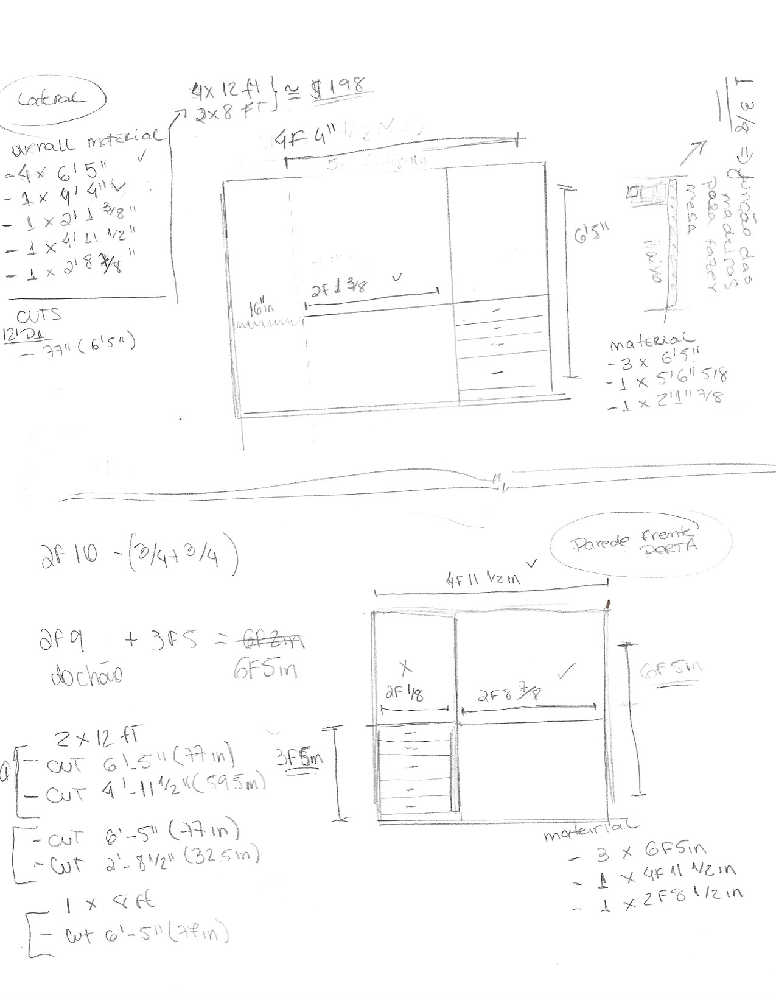
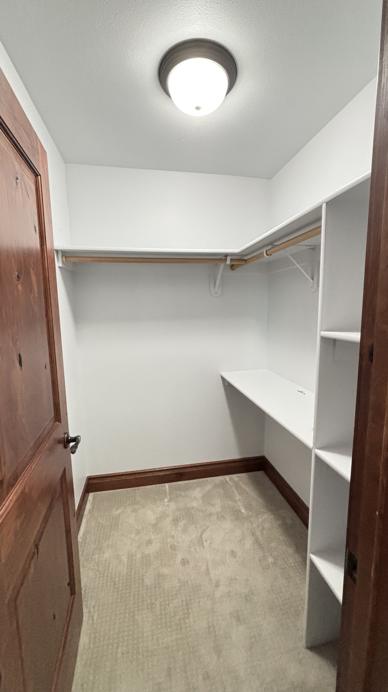
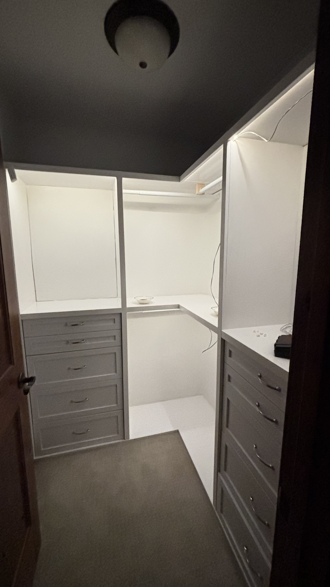

My Son Needed a Closet. I Ran a Full Product Cycle.
Every weekend I try to spend a few hours away from screens. No Slack, no scrolling, no Zoom. I go to my garage, put on some music, and work with my hands. My hobby is woodworking — DIY projects for the house. And recently, I realized the way I approach a build is exactly the way I approach a product.
The demand signal
My son is growing fast. His clothes pile was getting out of control, and the old closet — a cheap off-the-shelf unit that never quite fit the space — wasn't keeping up. Classic demand signal. A real need, growing in my market (my home), with a user who couldn't solve it himself.
First question: build or buy?
I mapped the options. A custom closet that actually fit the room and the layout we needed would be expensive and slow to source. Off-the-shelf options required too much compromise. Building my own would cost less, give me exactly what I envisioned, and sharpen skills I actually use. And there's something that's hard to quantify but impossible to ignore: the satisfaction of shipping something you made yourself.
Decision: build. ROI approved.
Research, planning, and stakeholder sign-off
Before touching a single piece of wood, I did research. I looked at designs, sketched ideas, found references online. Then I sat down with my key stakeholder — my wife — and aligned on the vision. No point building the wrong thing. She had strong opinions on layout, storage needs, and what done actually looked like. I took notes.
Then I drew it on paper. Rough measurements from the room, layout sketched by hand. That's the spec. It doesn't need to be pretty — it needs to be clear enough to build from.
Before I picked up a tool, we also aligned on what done looked like: full wardrobe fits, layout works with the room, finished within the month. Simple criteria — but having them upfront meant we'd both know when to stop.

You might ask: why not use one of the dozens of design tools out there for this? Floorplanner, SketchUp, even a simple app on the iPad. Here's my honest answer — this hobby exists precisely so I can stay away from screens. Drawing by hand is part of the process. When I sketch with a pencil, I'm forced to think slowly, measure twice, and commit to decisions with my own judgment before any tool gets involved. That's the point. It keeps my critical thinking sharp and my hands in charge. And when I eventually bring AI into the picture — which I do — I already know what good looks like. I'm not asking it to think for me. I'm asking it to help me execute faster on something I've already reasoned through.
Where AI actually helped
One thing I've always struggled with in woodworking is optimizing cuts — figuring out how to get all the pieces you need from standard panels with the least waste. Before AI got as powerful as it is today, this was mostly guesswork.
So I tried something different this time. I described my measurements, the pieces I needed, and the standard panel sizes available at my local store. The AI gave me a cut plan back in minutes.
Good draft. Not optimized enough.
It didn't have full context on how wood is actually sold locally — specific sizes available, price differences between options. I pushed back. Added more context, refined the constraints, and we iterated. The second version was significantly better: less waste, lower cost, simpler cuts.
This is what working with AI actually looks like. It's not magic. It's a collaboration. You bring the context and judgment — it brings speed and pattern recognition. The moment you stop reviewing critically, you lose all the value.
Execution — and knowing when to subcontract
I bought the wood. Big cuts I had done at the store to keep my garage clean. Precise cuts I did myself with a circular saw at home.
Then came the drawers. Drawers are tricky. Tolerances are tight, mechanisms matter, and getting them wrong means they'll stick or wobble forever. The question I always ask: does owning this part improve the outcome, or just my sense of control? Drawers: outcome doesn't change. I bought them ready-made and integrated them into the build. You don't need to own every part of the process — you need to own the outcome.
It reminded me of a project I did for a telecom client years ago. We needed a very specialized CTI connector — complex, niche, needed only for one phase of the project. We subcontracted it. Got it done. Moved on. Smart resource allocation beats pride every time.
Adapting mid-build
I knew going in that the back wall and the drawer tolerances were likely trouble spots. I didn't have solutions yet — but I'd flagged them. So when they showed up, I wasn't surprised. I was ready.
Nothing goes exactly as planned. That's not a failure — that's a project.
Halfway through, I realized the back wall of the closet would be exposed. Painting it was possible, but it would add time and cost that weren't in the original scope. Quick research: flexible PVC sheeting — clean, easy to cut, and cheap. Problem solved in an afternoon, no painting, no extra days.
Then I noticed small gaps at the junctions between the PVC and the wood frame. Cosmetically not ideal. More research: L-shaped corner protectors used for wall edges. Cut them to size, applied them. Perfect finish. Clean junction between materials.
Adaptability isn't a backup plan. It's part of the plan.
Pilot, iteration, and launch
Before calling it done, I ran a pilot. I showed my wife the closet in progress, let her test how clothes would fit, and collected real feedback. Not a mockup — the actual thing, in the actual room, with real clothes.
Some of that feedback made it into the final version. Small layout adjustments, better spacing, a few changes to organization. The kind of thing you only discover when someone actually uses what you built.
After incorporating the feedback, the final reveal. She loved it.
One honest note for myself: if I ran this again, I'd validate the wall finish earlier — before buying the main panels. A thirty-minute test would have saved an afternoon of improvisation.
Then came the nice-to-haves: LED strip lights inside, an extra shelf for toys. These started out of scope by design — I don't add nice-to-haves until the core is solid and I know what's left in the tank. Time and budget had room. So they went in. And they turned a functional closet into something genuinely delightful. The kind of finish that improves adoption. And word-of-mouth. My mother-in-law wants one now.


The takeaway. PM thinking isn't a job function. It's a way of approaching problems. You identify demand. You make the build-or-buy call. You plan with the constraints you have. You adapt mid-execution. You ship. Then you improve. Whether you're building a product for thousands of users or a closet for your kid — the process holds. And if you think AI will solve your problem on the first try, remember: good output requires good context. Give it more, and you'll get more back.
P.S. — Before anyone asks: no, I'm not taking orders. Woodworking is a hobby, not a side hustle. My mother-in-law is already pushing her luck.